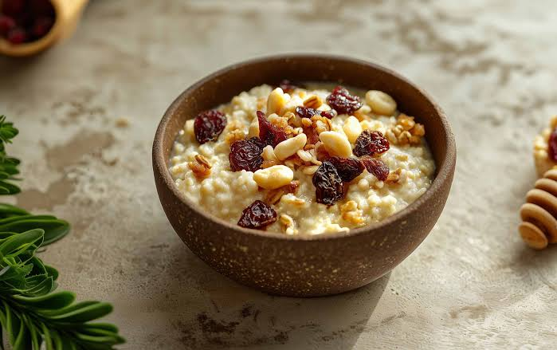

Millet Porridge
Home

Description
A warm, nourishing breakfast bowl, naturally gluten-free and filling.
Ingredients
- ½ cup millet (foxtail, pearl or finger millet flour all work)
- 2 cups water
- 1 cup plant milk (almond, oat or coconut)
- 2 tbsp jaggery, maple syrup or dates
- ¼ tsp cardamom or cinnamon
- Toppings: sliced banana, nuts, seeds, berries
Steps
- Rinse the millet and dry-roast it in a pot for 2-3 minutes until nutty.
- Add the water and bring to a boil, then lower the heat and simmer covered for 15-18 minutes.
- Pour in the plant milk and sweetener. Cook 5-7 minutes more, stirring, until creamy.
- Stir in the cardamom or cinnamon.
- Serve warm with your toppings.